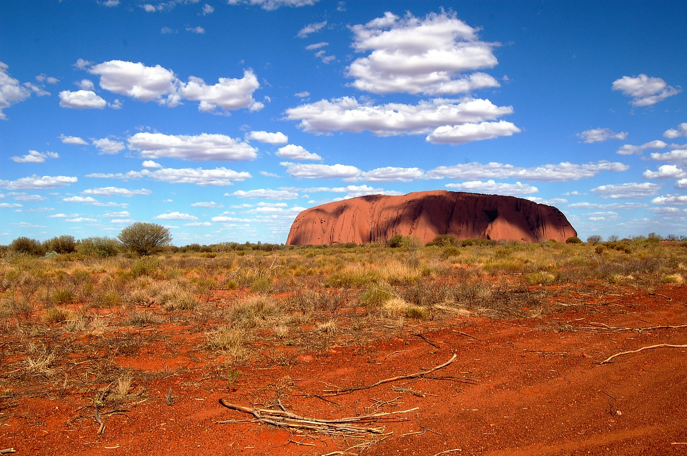

Horizons du Pacifique Sud
23 jours / 20 nuits

Partez à la conquête de l'Océanie, terres reculées et convoitées qui sont le rêve de plusieurs
voyageurs, notre circuit vous donnera l'opportunité d'explorer cette région du monde à votre guise.
Des métropoles australiennes aux plages de Fidji en passant par la Terre du Milieu, vous serez
assurément émerveilé.
Sydney • Cairns • Ayers Rock • Alice Springs • Melbourne • Auckland • Rotorua • Wellington • Christchurch • Queenstown • Fidji
Inclusions
- Vols internationaux au départ de Montréal, Québec ou Ottawa avec Air New Zealand
- Vols Sydney-Cairns-Ayers Rock et Alice Springs-Melbourne avec Qantas Airways
- Hébergement dans de luxe 5 étoiles
- Hébergement dans des hôtels 4 et 5 étoiles
- Visites avec guides francophones selon l'itinéraire
- Petit-déjeuner quotidien